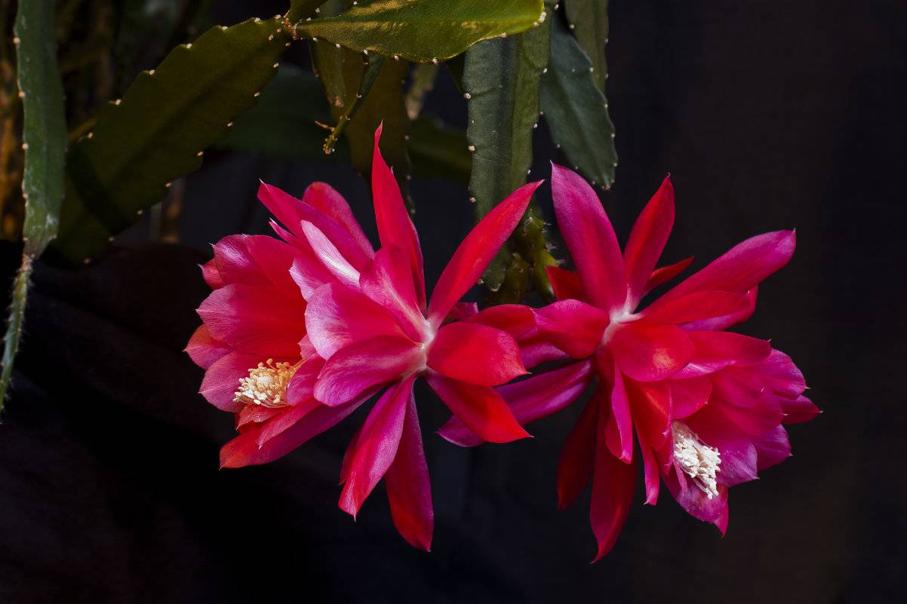

Немного о кактусах
Кактус — неприхотливое растение, которое нуждается в редком поливе и пересадке.
Комнатные виды кактусов растут около десяти лет.
В домашних условиях обычно выращивают две группы: пустынные и лесные.
Пустынные кактусы
Чаще всего именно их представляют, когда говорят об этом растении. У таких кактусов есть колючки и «мясистое» тело.

Больше о пустынных кактусах можно узнать тут.
Лесные кактусы (тропические)
Они напоминают суккуленты, у них более мягкие иголки, встречаются виды с длинными стеблями, которые могут переплетаться друг с другом.
Например, декабрист — это лесной кактус.

Больше о лесных кактусах можно узнать тут.
Советы, чтобы зацвел кактус:
- создайте максимально естественную среду обитания;
- не переставляйте растение с места на место;
- чуть реже поливайте;
- бутоны формируются на теневой стороне растения, не поворачивайте их на солнечный свет, иначе они осыпятся.
Инструкция, как пересадить кактус:
- Перестаньте поливать растение за несколько дней до пересадки.
- Наденьте защитные перчатки: так вам будет удобнее подхватить колючий кактус.
- Осторожно удалите растение из горшка. Будьте аккуратны, старайтесь не повредить корни.
Если кактус «прилип» к стенкам горшка, можно использовать лопатку, чтобы поддеть корни.
- Разместите кактус в новом горшке так, чтобы его шейка была на уровне края.
Начинайте равномерно подсыпать грунт со всех сторон, периодически постукивая горшок. Так вы уплотнить землю.
- Чуть-чуть полейте кактус. Полноценный полив можно провести через одну-две недели.